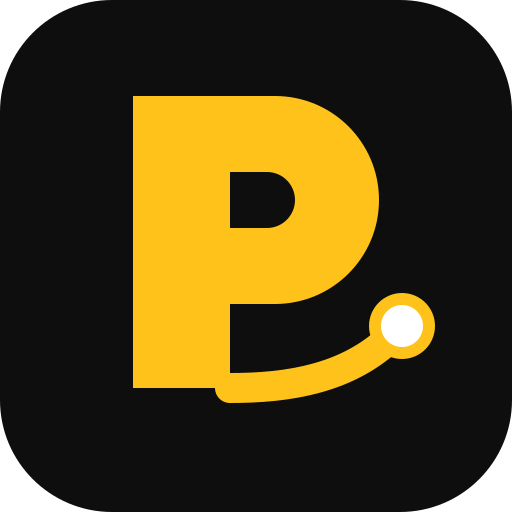
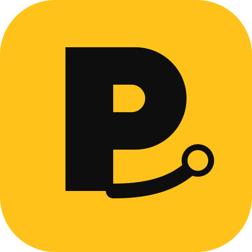
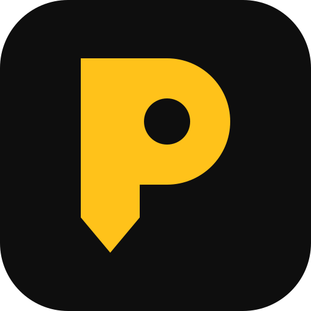
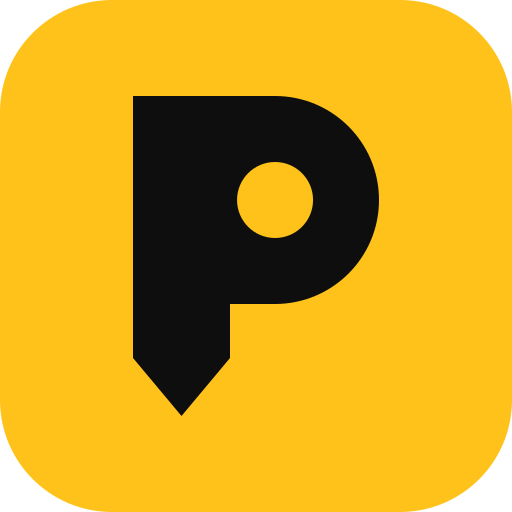
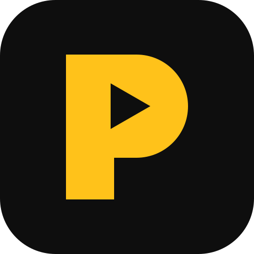
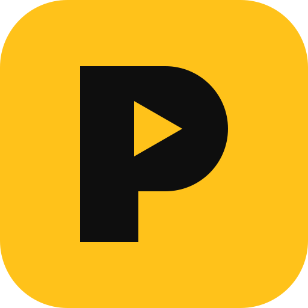

Taxi, Triciclo (Triciclub) y Mensajero en una sola app, con precio justo que se puede subir o bajar. Todo es diseño: no se ha programado la app de verdad. Hecho el 4-nov-2026 con tus decisiones de hoy. Los datos son de ejemplo.
Las 3 salen de tu «P» actual (amarilla sobre negro). Cada una en icono de app (oscuro y claro) y en logotipo horizontal.


A · En rutaMi recomendación
La P dibuja un viaje de un punto a otro: cuenta lo que hace la app, se anima al abrir sin pesar nada y no rompe con la P que ya conocen los mensajeros.


B · Pin
La P es un punto del mapa (el palo termina en punta): se entiende sin leer y sirve también como marcador dentro del mapa.


C · Pa’lante
El hueco de la P es una flecha hacia allá: la más simple de todas, la que mejor se ve pequeña en la pantalla del móvil.
Lo que tienes que decidir
¿Qué logo?A, B o C. Recomiendo A «En ruta».
Tope de deuda del choferSi debe más que esto, se pausan solo sus viajes en efectivo (después del piloto). Recomiendo 2.000 CUP (≈ 2 semanas y media de comisión de un chofer con 9.800 CUP de viajes por semana), con aviso 2 días antes.
Precio de la Moto (pasajero)No estaba decidido. Recomiendo 80 % del triciclo eléctrico (2 km = 130 CUP): va 1 persona, pero es rápida.
Taxi Clásico y Taxi XLBásico = 20 % menos que La Nave (≈ 424 CUP por km; 4,1 km = 1.740 CUP). Recomiendo Clásico +10 % y XL +40 %, y fijar un precio mínimo por viaje con los primeros taxistas del piloto (un viaje de 0,8 km hoy saldría en 360 CUP).
¿Con qué empieza el cliente: WhatsApp o SMS?Recomiendo el código por WhatsApp primero (gratis, ya lo hace el bot) y SMS solo de reserva, como dice la investigación del SMS.
Lo que hay que saber
El prototipo pesa ~216 KB sin el mapa (la meta era menos de 300 KB). El inicio se usa al momento; el mapa entra después.
Los vehículos son provisionales (dibujos con luz y sombra). Mañana, desde tu PC, se hacen en 3D con los prompts.
El mapa y las rutas son los nuestros, del VPS. Si el mapa no carga, la app sigue funcionando.
De noche (de 7 p. m. a 7 a. m.) todo se ve en oscuro solo. En el perfil se puede fijar claro u oscuro.
Hecho por Claude para Ernesto Rondón · 4-nov-2026 · Datos y nombres de ejemplo.